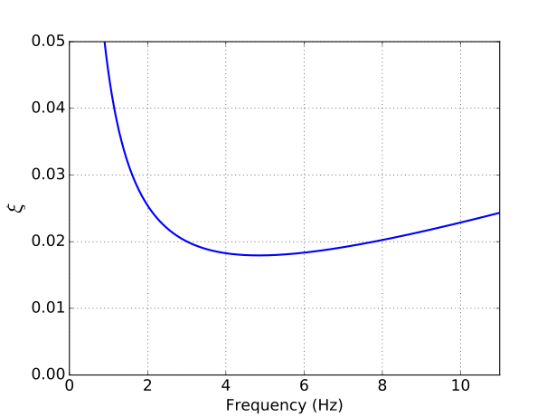

Dynamics
Dynamic problems like the response of a multi degree of freedom structure to external forcing and wave propagation in a medium can also be solved using the Solid Mechanics module.
The equation of motion for a typical dynamics problem has the following format:
Here, is the mass matrix, is the damping matrix, is the stiffness matrix and is the vector of external forces acting at the nodes. , and are the vector of displacement, velocity and acceleration at the nodes, respectively.
Time integration
To solve the above equation for , an appropriate time integration scheme needs to be chosen. Newmark (Newmark, 1959) and Hilber-Hughes-Taylor (HHT) (Hughes, 2000) time integration schemes are two of the commonly used methods in dynamics.
Newmark time integration
In Newmark time integration, the acceleration and velocity at are written in terms of the displacement, velocity and acceleration at time and the displacement at using the NewmarkAccelAux and NewmarkVelAux Aux Kernels, respectively.
In the above equations, and are Newmark time integration parameters. Substituting the above two equations into the equation of motion will result in a linear system of equations () from which can be estimated.
For and , the Newmark time integration method is implicit and unconditionally stable. This is the constant average acceleration method with no numerical damping. This is recommended only when a constant timestep is used throughout the simulation. If for some reason, the simulation does not converge and the timestep is halved, this time integration method with no numerical damping can result in high frequency noise.
and results in the linear acceleration method where the acceleration is linearly varying between and .
and is identical to the central difference method.
For in structural dynamics problems, the Newmark method is unconditionally stable irrespective of the time-step . For , the Newmark method is at least second order accurate; it is first order accurate for all other values of .
Hilber-Hughes-Taylor time integration
The HHT time integration scheme is built upon Newmark time integration method. Here, in addition to the Newmark equations, the equation of motion is also altered resulting in:
Here, is the HHT parameter. For , and , the HHT method is at least second-order accurate and unconditionally stable. For non-zero values of , the response at high frequencies (above ) are numerically damped, provided and are defined as above.
More details about the Newmark method and HHT method can be found in these lecture notes.
Rayleigh damping
This is the most common form of structural damping used in dynamic problems. Here, the damping matrix () is assumed to be a linear combination of the mass and stiffness matrices, i.e., . Here, and are the mass and stiffness dependent Rayleigh damping parameters, respectively.
The equation of motion in the presence of Rayleigh damping is:
The degree of damping in the system depends on the coefficients and as follows: (1)
where, is the damping ratio of the system as a function of frequency . For example, the damping ratio as a function of frequency for and is presented in Figure 1. Note that has units of rad/s and used in the figure has units of Hz.

Figure 1: Damping ratio as a function of frequency.
To model a constant damping ratio using Rayleigh damping, the aim is to find and such that the is close to the target damping ratio , which is a constant value, between the frequency range . This can be achieved by minimizing the difference between and for all the frequencies between and , i.e., if
Then, and results in two equations that are linear in and . Solving these two linear equations simultaneously gives:
A similar method can be used to estimate and for non-constant damping ratios.
Implementation and Usage
In the MOOSE framework, the mass and stiffness matrices are not explicitly calculated. Only the residuals are calculated. To get the residual, the equation of motion (with Rayleigh damping and HHT time integration) can be written as:
Here, is the density of the material and is the stress tensor. The weak form of the above equation is used to get the residuals.
The first two terms to the left that contain are calculated in the InertialForce kernel. , , and need to be passed as input to the InertialForce kernel.
The next two terms to the left involving are calculated in DynamicStressDivergenceTensors.
Note that the time derivative of and are approximated as follows:
The input file syntax for calculating the residual due to both the Inertial force and the DynamicStressDivergenceTensors is:
Here, ./DynamicSolidMechanics is the action that calls the DynamicStressDivergenceTensors kernel.
Finally, when using HHT time integration method, external forces like gravity and pressure also require as input.
For dynamic problems, it is recommended to use PresetDisplacement and PresetAcceleration for prescribing the displacement and acceleration at a boundary, respectively.
DynamicStressDivergenceTensors uses the undisplaced mesh by default but kernels such as InertialForce and Gravity, and boundary conditions such as Pressure use the displaced mesh by default. All calculations should be performed either using the undisplaced mesh (recommended for small strain problems) or the displaced mesh (recommended for finite strain problems). Therefore, use_displaced_mesh parameter should be appropriately set for all the kernels and boundary conditions.
Static Initialization
To initialize the system under a constant initial loading such as gravity, an initial static analysis can be conducted by turning off all the dynamics related Kernels and AuxKernels such as InertialForce, NewmarkVelAux and NewmarkAccelAux for the first time step. To turn off stiffness proportional Rayleigh damping for the first time step static_initialization flag can be set to true in DynamicSolidMechanics or DynamicStressDivergenceTensors. An example of static initialization can be found in this following test:
# One 3D element under ramped displacement loading.
#
# loading in z direction:
# time : 0.0 0.1 0.2 0.3
# disp : 0.0 0.0 -0.01 -0.01
# Gravity is applied in y direction. To equilibrate the system
# under gravity, a static analysis is run in the first time step
# by turning off the inertial terms. (see controls block and
# DynamicSolidMechanics block).
# Result: The displacement at the top node in the z direction should match
# the prescribed displacement. Also, the z acceleration should
# be two triangular pulses, one peaking at 0.1 and another peaking at
# 0.2.
# The y displacement would be offset by the gravity displacement.
# Also the y acceleration and velocity should be zero until the loading in
# the z direction starts (i.e, until 0.1s)
# Note: The time step used in the displacement data file should match
# the simulation time step (dt and dtmin in the Executioner block).
[Mesh]
type = GeneratedMesh
dim = 3 # Dimension of the mesh
nx = 1 # Number of elements in the x direction
ny = 1 # Number of elements in the y direction
nz = 1 # Number of elements in the z direction
xmin = 0.0
xmax = 1
ymin = 0.0
ymax = 1
zmin = 0.0
zmax = 1
allow_renumbering = false # So NodalVariableValue can index by id
[]
[Variables] # variables that are solved
[./disp_x]
[../]
[./disp_y]
[../]
[./disp_z]
[../]
[]
[AuxVariables] # variables that are calculated for output
[./accel_x]
[../]
[./vel_x]
[../]
[./accel_y]
[../]
[./vel_y]
[../]
[./accel_z]
[../]
[./vel_z]
[../]
[./stress_xx]
order = CONSTANT
family = MONOMIAL
[../]
[./strain_xx]
order = CONSTANT
family = MONOMIAL
[../]
[./stress_yy]
order = CONSTANT
family = MONOMIAL
[../]
[./strain_yy]
order = CONSTANT
family = MONOMIAL
[../]
[./stress_zz]
order = CONSTANT
family = MONOMIAL
[../]
[./strain_zz]
order = CONSTANT
family = MONOMIAL
[../]
[]
[Kernels]
[./DynamicSolidMechanics] # zeta*K*vel + K * disp
displacements = 'disp_x disp_y disp_z'
stiffness_damping_coefficient = 0.000025
static_initialization = true #turns off rayliegh damping for the first time step to stabilize system under gravity
[../]
[./inertia_x] # M*accel + eta*M*vel
type = InertialForce
variable = disp_x
velocity = vel_x
acceleration = accel_x
beta = 0.25 # Newmark time integration
gamma = 0.5 # Newmark time integration
eta = 19.63
[../]
[./inertia_y]
type = InertialForce
variable = disp_y
velocity = vel_y
acceleration = accel_y
beta = 0.25
gamma = 0.5
eta = 19.63
[../]
[./inertia_z]
type = InertialForce
variable = disp_z
velocity = vel_z
acceleration = accel_z
beta = 0.25
gamma = 0.5
eta = 19.63
[../]
[./gravity]
type = Gravity
variable = disp_y
value = -9.81
[../]
[]
[AuxKernels]
[./accel_x] # Calculates and stores acceleration at the end of time step
type = NewmarkAccelAux
variable = accel_x
displacement = disp_x
velocity = vel_x
beta = 0.25
execute_on = timestep_end
[../]
[./vel_x] # Calculates and stores velocity at the end of the time step
type = NewmarkVelAux
variable = vel_x
acceleration = accel_x
gamma = 0.5
execute_on = timestep_end
[../]
[./accel_y]
type = NewmarkAccelAux
variable = accel_y
displacement = disp_y
velocity = vel_y
beta = 0.25
execute_on = timestep_end
[../]
[./vel_y]
type = NewmarkVelAux
variable = vel_y
acceleration = accel_y
gamma = 0.5
execute_on = timestep_end
[../]
[./accel_z]
type = NewmarkAccelAux
variable = accel_z
displacement = disp_z
velocity = vel_z
beta = 0.25
execute_on = timestep_end
[../]
[./vel_z]
type = NewmarkVelAux
variable = vel_z
acceleration = accel_z
gamma = 0.5
execute_on = timestep_end
[../]
[./stress_xx]
type = RankTwoAux
rank_two_tensor = stress
variable = stress_xx
index_i = 0
index_j = 0
[../]
[./strain_xx]
type = RankTwoAux
rank_two_tensor = total_strain
variable = strain_xx
index_i = 0
index_j = 0
[../]
[./stress_yy]
type = RankTwoAux
rank_two_tensor = stress
variable = stress_yy
index_i = 1
index_j = 1
[../]
[./strain_yy]
type = RankTwoAux
rank_two_tensor = total_strain
variable = strain_yy
index_i = 1
index_j = 1
[../]
[./stress_zz]
type = RankTwoAux
rank_two_tensor = stress
variable = stress_zz
index_i = 2
index_j = 2
[../]
[./strain_zz]
type = RankTwoAux
rank_two_tensor = total_strain
variable = strain_zz
index_i = 2
index_j = 2
[../]
[]
[Functions]
[./displacement_front]
type = PiecewiseLinear
data_file = 'displacement.csv'
format = columns
[../]
[]
[BCs]
[./prescribed_displacement]
type = PresetDisplacement
variable = disp_z
velocity = vel_z
acceleration = accel_z
beta = 0.25
boundary = front
function = displacement_front
[../]
[./anchor_x]
type = DirichletBC
variable = disp_x
boundary = left
value = 0.0
[../]
[./anchor_y]
type = DirichletBC
variable = disp_y
boundary = bottom
value = 0.0
[../]
[./anchor_z]
type = DirichletBC
variable = disp_z
boundary = back
value = 0.0
[../]
[]
[Materials]
[./elasticity_tensor]
youngs_modulus = 325e6 #Pa
poissons_ratio = 0.3
type = ComputeIsotropicElasticityTensor
block = 0
[../]
[./strain]
#Computes the strain, assuming small strains
type = ComputeSmallStrain
block = 0
displacements = 'disp_x disp_y disp_z'
[../]
[./stress]
#Computes the stress, using linear elasticity
type = ComputeLinearElasticStress
block = 0
[../]
[./density]
type = GenericConstantMaterial
block = 0
prop_names = density
prop_values = 2000 #kg/m3
[../]
[]
[Controls] # turns off inertial terms for the first time step
[./period0]
type = TimePeriod
disable_objects = '*/vel_x */vel_y */vel_z */accel_x */accel_y */accel_z */inertia_x */inertia_y */inertia_z'
start_time = 0.0
end_time = 0.1 # dt used in the simulation
[../]
[../]
[Executioner]
type = Transient
start_time = 0
end_time = 3.0
l_tol = 1e-6
nl_rel_tol = 1e-6
nl_abs_tol = 1e-6
dt = 0.1
timestep_tolerance = 1e-6
[]
[Postprocessors] # These quantites are printed to a csv file at every time step
[./_dt]
type = TimestepSize
[../]
[./accel_6x]
type = NodalVariableValue
nodeid = 6
variable = accel_x
[../]
[./accel_6y]
type = NodalVariableValue
nodeid = 6
variable = accel_y
[../]
[./accel_6z]
type = NodalVariableValue
nodeid = 6
variable = accel_z
[../]
[./vel_6x]
type = NodalVariableValue
nodeid = 6
variable = vel_x
[../]
[./vel_6y]
type = NodalVariableValue
nodeid = 6
variable = vel_y
[../]
[./vel_6z]
type = NodalVariableValue
nodeid = 6
variable = vel_z
[../]
[./disp_6x]
type = NodalVariableValue
nodeid = 6
variable = disp_x
[../]
[./disp_6y]
type = NodalVariableValue
nodeid = 6
variable = disp_y
[../]
[./disp_6z]
type = NodalVariableValue
nodeid = 6
variable = disp_z
[../]
[]
[Outputs]
exodus = true
perf_graph = true
[]